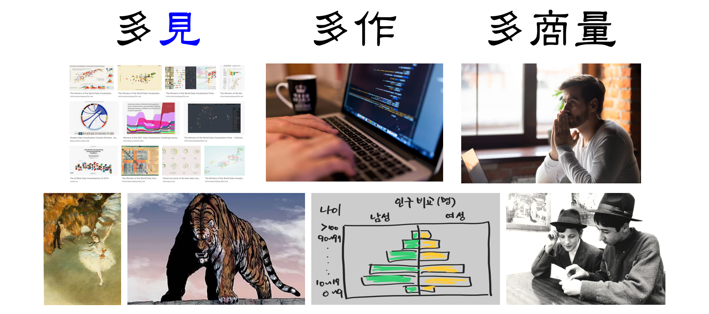

- 한국지능정보사회진흥원(NIA)에서 또 다른 기회를 주셨습니다. (21.12.03.)
- 데이터 시각화를 잘 하는 방법에 대한 개괄적인 발표였습니다.
- 발표를 녹화하지 않아 동영상은 제공이 불가합니다.
- 발표자료는 여기에서 다운로드받으실 수 있습니다.
- 사전 질문이 매우 많았습니다.
- NIA에서 일차 추려주셨는데도 수를 세어보니 56개더군요.
- 많은 분들의 관심에 감사드리며, 한편으로는 제한된 시간에 답을 충분히 드리지 못해 죄송스럽습니다.
- 아쉬운 대로 본 블로그를 통해 답변을 정리해 드립니다.
- 제가 모든 것을 충분히 알지 못합니다. 이 점을 감안하시고 제 의견이라고 들어주시면 감사하겠습니다.
- 본 글을 작성하면서 질문을 다시 분류하고 묶었으며 받은 질문 텍스트를 그대로 사용했습니다.
- 비슷한 질문도 많이 주셨습니다. 이들은 한 번에 묶어서 답변을 드립니다.

1. 사례
1-1. 에기원에서 진행하는 데이터분석 사례 중 인사이트 도출이 잘 된 예시들은?
1-2. Output을 활용, 분석하여 outcome을 도출, 계량 할 수 있을지?
답변 보기/접기
데이터 담당자로서 연구부서 분들의 데이터를 받아 시각화를 수행하며 협업을 진행하고 있습니다.
그러나 아쉽게도 많은 해당 업무들이 논문 출판 및 실증 진행중이라 먼저 보여드리기 어렵습니다.
모쪼록 양해 바랍니다.
논문으로 출판된 사례를 하나 말씀드리면 다음과 같습니다.
3가지 인자가 2가지 특성에 미치는 영향을 살펴본 연구입니다.
EDA나 머신러닝 모델링 만으로는 설명이 충분치 않던 상황입니다.
1,000개의 시뮬레이션 데이터로 믿을 만한 머신러닝 모델을 만든 후, 이 모델을 이용해 42,875개의 가상 데이터를 만든 뒤 이들의 연관성을 3D contour 두 개로 시각화하여 간결하게 설명하고 리뷰어를 이해시킬 수 있었습니다.
1-3. CFD 해석 데이타도 데이터 시각화 가능한가요?
답변 보기/접기
네. 가능합니다.
일반적으로 CFD(유체열역학) 해석 데이터라고 하면 온도나 유량, 유속을 컬러맵으로 나타낸 것을 말합니다.
CFD라는 단어를 사용하신 시점에서 이 것을 모르고 계시지는 않을 것 같습니다.

저희 연구원 내 다른 부서 분께서 모델별로 도출된 CFD 데이터를 추출하여 추가 해석을 수행한 경험이 있습니다.
실증 진행중이라 보안상 자세한 내용은 말씀드리지 못했지만 관련 기술은 아래 글에 정리했습니다.
2가지 인자를 바꾸어가며 최적의 조건을 찾고 확인하는 연구였습니다 (링크)

1-4. 한국에서의 성공사례
1-5. 데이터 시각화의 중요성이 드러나는 사례가 궁금합니다
1-6. 데이터 시각화를 통해 문제를 해결하신 사례가 궁금합니다
1-7. 독창적인 생각을 통해서 데이터 분석을 성공적으로 해낸 사례
1-8. 가장 임팩트 있었던 시각화 사례가 있으셨을까요?
답변 보기/접기
데이터 분석에 기반하여 기사를 쓰고 사회에 영향력을 미치는 분들이 있습니다.
데이터 저널리즘이라고 하고, 많은 분들이 좋은 기사를 쓰고 계십니다: http://datajournalismawards.kr/
데이터의 효과적 전달과 올바른 쓰임을 가장 진지하게 고민하시는 분들이시니 둘러보기를 권합니다.

2. 고충
2-1. 데이터 시각화는 의사결정을 도와주는 도구로 알고 있습니다. 아무리 좋은 도구를 가지고 있어도(데이터를 잘 뽑고 시각화를 잘해도) 본래의 목적인 의사결정이 그에 못지 않게 이상한 방향(이럴거면 뭐하러 시각화했나 하는 방향)으로 이뤄지는 경우도 있나요? 있다면 빈도와 사례도 부탁 드립니다.
답변 보기/접기
흔히 답정너라고 말하는 상황에 답답함을 느끼시는 듯 합니다.
데이터 분석을 하는 분이라면 상당히 자주 겪는 일이 아닌가 싶네요.
회사마다 사람마다 다르겠지만 제 경험상 50% 정도 저런 일이 있는 것 같습니다.
하지만 의견이 받아들여지지 않았다고 상대방이 답을 정해놨다고 보기는 힘들 수 있습니다.
분석에 동원된 데이터는 전체 업무의 일부이기 때문에 더 넓게 봐야 하는 의사결정자는 다른 결정을 내릴 수 있습니다.
예를 들어, 데이터에 드러나지 않는 가격 협상력을 유지하기 위해 당장 약간의 손해를 안고 더 비싼 업체를 일부 활용하기도 합니다.
데이터 분석 결과 기각 사유가 더 넓은 시야와 고민이 아니라면 더 좋은 곳을 찾아 떠날 수도 있을 것입니다.

3. 시각화 공부와 교육
3-1. 적절한 시각화를 선택하는 기준은 무엇인가요?
3-2. 데이터시각화 입문하기위한 좋은 학습콘텐츠나 서적 부탁드립니다!
3-3. 데이터 시각화는 어떤점을 표현해야 시각회에 극대화를 시킬 수 있을까요?
3-4. 데이터 시각화를 구현할 때 고려사항을 설명해주셨으면 좋겠습니다.
3-5. 많은 시각화 예시와 시각화시 어떤 관점으로 보는게 가장 효율적이고 데이터에 대한 특성별 시각화 방안이 궁금합니다.
3-6. 시각화의 구조를 심리학적 상황별 기능별로 한분야를 택해서 설명 부탁드립니다.
3-7. 데이터 시각화를 잘 구성하기 위한 머리속의 구상(예., 데이터 구성/논리적 연결/표현 등은 어떻게?)은 어떤 자세(설계, 개발)를 가져야 할까요?
3-8. 데이터 시각화를 활용하기 위해 일반인이 길러야 할 능력은 무엇일까? (ex 엑셀)
3-9. 데이터 종류에 따른 시각화 방법이 다른데 주로 어떤 기준으로 결정하나요?
3-10. 요새 각 카테고리별 비중에 대한 데이터를 많이 다루면서 항상 고민이 되는 부분이 있는데요, 보통 비율을 표현할때 파이차트 혹은 누적막대차트를 사용하게 됩니다. 단순히 한 시점에 대해서는 저렇게 표현해도 괜찮지만 여러 시점을 비교하며 보여줄때 어떤 그래프가 효율적일까요?
답변 보기/접기
20C 말 인지 심리학을 비롯한 인지 과학은 많은 사실을 알아냈습니다.
기하학적 요소와 주관적 아름다움이 인지에 미치는 영향을 알게 되었으므로 이 지식을 활용하는 것이 합리적입니다.
예를 들어, 시간에 따른 비율 변화는 stream graph나 ridge plot을 쓰시면 좋습니다
클라우스 윌케의 데이터 시각화 교과서를 추천드리며,
더 깊은 이해를 위해서는 데이터 시각화, 인지과학을 만나다를 권합니다.
두 번째 책은 아쉽지만 절판되었습니다. 도서관 등을 찾아보시면 좋겠습니다.
Python의 가장 대표적인 시각화 라이브러리는 Matplotlib인데, 이를 다루는 시중의 기술서는 아쉬운 점이 많습니다.
책 몇 권을 봤는데 공식 홈페이지 예제 (링크), 그 중에서도 초급 수준만을 번역해 놓은 수준이더군요.
차라리 그 돈은 다른 데 쓰고 공식 홈페이지를 보는 게 낫다는 생각이 들었습니다.

3-11. 데이터 시각화를 잘 하기 위한 통찰력을 얻는 소스가 있으신가요?
3-12. 초보자가 데이터분석 공부하기 좋은 방법을 알려주세요.
3-13. 데이터 분석을 위한 기초 학습은 어떤 것부터 하면 좋을까요?
3-14. 다른 사람이 시각화 한 것을 많이 찾아보는 것도 도움이 될까요?
3-15. 쉽게 이해할수있는 시각화를 만들려면 ui/ux가 매우 중요한데, 시각화하는 사람은 이미 데이터에 대한 이해가 있기때문에 시각화자료를 볼 사람들에겐 여전히 어려운 시각화 자료를 만들 수 있다고 생각합니다. 시각화하실때 이러한 갭을 최소화하기위해서 어떻게 하시나요
답변 보기/접기
글을 잘 쓰려면 많이 읽고(多讀), 많이 쓰고(多作), 많이 생각하라(多商量)는 말이 있습니다.
시각화도, 그 무엇도 비슷하다고 생각합니다.
좋은 그림을 많이 보고, 많이 그려보고, 많이 생각하는 것이 처음이자 끝이 아닐까요?
다만 데이터 시각화를 잘 하겠다고 데이터 시각화만 많이 보지는 않았으면 좋겠습니다.
데이터 시각화는 회화, 영화 등 시각적 예술활동을 데이터에 적용한 것이니 시야를 넓히면 더 좋습니다.
고전미술, 웹툰, 영화 포스터, 광고 등 많은 작품에서 영감을 받으시기를 바랍니다.
코드가 손가락에 스며들도록 연습해야 하는 것은 말할 것도 없고,
키보드와 모니터를 치우고 백지와 펜을 들어 코드의 제약 없이 스케치하는 연습도 좋습니다.
생각은 혼자 하기보다는 동료나 대중의 반응을 보면서 feedback loop을 형성하시길 바랍니다.
주신 질문처럼 분석가가 데이터에 너무 익숙해서 문제가 되기도 합니다. 낯선 시각의 피드백이 필요합니다.

3-16. 학생들에게 데이터시각화가 중요하다는 것을 알려줄만한 쉬운 사례가 있다면 소개부탁드립니다~
답변 보기/접기
3-17. 학교에서 데이터 사례 수업을 하려고 하는데 쓸만한 데이터를 어디서 찾을 수 있을까요?(공공데이터 포털 말구요 ㅠㅠ!)
답변 보기/접기
제가 교육 현장을 질문자만큼 잘 몰라서 서울고등학교 송석리 선생님의 말씀을 전달해 드립니다.
선생님께서 한성과학고에 재직중이던 2019년 PyCon Korea에서 교육의 미래를 바꾸는 오늘의 파이써니스쿨 (링크)이라는 발표를 하셨습니다.
학생들이 (과거의 저보다 훨씬) 열정적으로 참여한 모습을 보고 신기해서 "과학고라고 해도 관심이 없는 학생도 있었을텐데 어떻게 저런 참여를 이끌었는지"를 질문드렸습니다.
선생님의 대답은 "학생들 본인들의 데이터로 수업을 했다. 자기 스스로에게는 누구나 관심이 있다."였습니다.
생각해보니 저도 고등학교때 한 친구가 공학용 계산기로 자리 추첨 프로그램을 만들어서 매주 자리를 뽑은 기억이 있습니다.
본인의 일주일 짝과 자리가 결정되는 그 순간 저를 포함한 모두가 초인적인 집중력을 발휘했습니다. ^^;
3-18. 쉽게따라하기 좋은 데이터 시각화 방법에 대해서 궁금합니다.
3-19. 파이썬 기반으로 여러 모델을 만들고 개발했지만.. 시각화는 거의 제대로 해본적이 없습니다. 사실 제게는 모델 만드는 것보다 파이썬으로 예쁘게 제대로 시각화하는게 더 어렵고 귀찮더라구요... 소요되는 시간이 더 많이 소요되고.. 피땀은 배신하지 않겠지만, 혹시 쉽게 파이썬 기반으로 시각화를 예쁘게 하는 쉬운 방법이 있는지.. 만약 없다면 혹시 쉽게 파이썬 기반 시각화 코딩을 익히는 방법이 있는지 궁금합니다.
답변 보기/접기
먼저 쉽게, 귀찮더라라는 단어와 좋은, 예쁘게라는 단어의 조합에 이의를 제기하고 싶습니다.
"베끼기 좋은 코드 알려주세요"로 해석할 수도 있겠지만 설마 이건 아니라고 생각합니다. 검색하면 나오거든요.
분야를 막론하고 뭔가 잘 했다는 느낌을 받으셨다면 그건 창조자의 뼈를 깎는 노력이 배어 나왔기 때문입니다.
노력 없이 좋은 결과를 내는 천재들도 있습니다만 타고 나야 하니 본 질문이나 답변의 대상이 될 수 없겠죠.
쉽게 익히는 방법이 있을지도 모르겠지만 아쉽게도 저는 알지 못합니다. 그냥 매일 조금씩이나마 꾸준히 하는 법 밖에는요.
"그래서 넌 뭘 얼마나 열심히 했는데?"라고 물어보신다면, "내게 코딩 실력이 부족하구나."를 느낀 2019년 여름 이후 일일 커밋을 하고 있습니다. 오늘(12/4)까지 757일째입니다.
1000일이 넘는 분들도 있습니다. 스스로 아직 많이 부족하다고 느끼고 있고, 더 열심히 하려고 노력하고 있습니다.
따라하기 좋은 예제는 라이브러리 공식 홈페이지, Kaggle Notebook, 여러 블로그에서 찾을 수 있습니다.
목표를 세우셨다면 그냥 묵묵히 정진하는 것이 답입니다. 진심을 담아 응원하겠습니다. :)

4. 시각화 도구
4-1. 다양한 데이터 작성 툴이 있습니다. 엑셀, R, 파이썬 등. 디자인 전공자들에게 추천하는 툴이 있으신가요?
4-2. 초보 및 전문가를 위한 데이터 시각화를 설계/개발하기 위한 요구사항은 어떻게 될까요?
4-3. 데이터 시각화에서 가장 많이 이용하는 툴은 어떤 것인가요?
4-4. 시각화를 어떤식으로 보여주실지는 모르겠지만, 시각화에 태블로 역량이 중요하다고 생각하시나요.
4-5. 평소에 시각화자료 올려주시는거 즐겨보고 있습니다. 요즘은 어떤 패키지가 유행인가요?
4-6. 사례에 사용하시는 기술들도 함께 나눠주세요!
4-7. 인터렉티브한 시각화를 위해서 가장 선호하는 방법은 무엇인가요?
답변 보기/접기
가장 좋은 도구는 본인이 속한 환경에 따라 달라진다고 생각합니다.
실시간으로 데이터를 받아 보여주는 대시보드를 만든다면 tableau, power BI 등이 유용하실 것이고
통계 문제를 많이 푼다면 R이, 머신러닝이나 다른 앱과 연동한다면 Python이 가장 좋을 겁니다.
코딩을 잘 모르는 분들을 상대해야 한다면 엑셀만한 게 없을지도 모릅니다.
저는 python만 사용합니다. 웹으로 deploy할 일이 없고 복잡한 수식을 풀 일이 종종 있기 때문입니다.
python 중에서도 matplotlib을 포함한 관련 생태계(seaborn, geopandas, sklearn-plot, yellowbrick)만 사용합니다.
제가 쓰는 라이브러리들이 다 matplotlib을 활용하고 있기 때문이고, interactive한 결과물을 만들 필요가 없기 때문입니다.
조만간 web deploy를 할 것 같습니다. 같은 이유로 plot.ly를 배울까 생각중입니다.
본인의 필요에 따라 배우고 활용하시는게 가장 좋지 않을까요? :)
유행 따라 주무기를 바꾸는 것을 선호하지 않습니다.
크리티컬한 문제가 없다면 내 손에 스며든 도구가 최적의 도구라고 생각합니다.
이 도구로 할 수 없는 일을 해야만 하면 기꺼이 최선을 다해 바꾸겠지만요.
5. 노하우
5-1. 시각화에서 가장 조심할점은 무엇인가요?
5-2. 데이터 시각화를 구현할 때 고려사항을 설명해주셨으면 좋겠습니다.
5-3. 데이터 시각화를 하는데 있어 가장 사람들이 실수하는 것이 무엇입니까.
5-4. 데이터를 시각화하면 데이터를 쉽게 이해하는데 많은 도움이 된다고 이해하고 있습니다만, 간혹 잘못된(?) 데이터 시각화는 자칫 데이터에 대한 잘못된 이해 또는 오해를 불러오기도 한다고 생각합니다, 이러한 오해의 요소가 있다면 데이터 시각화 과정에서 주의해야 할, 또는 피해야할 부분은 무엇일까요? 데이터 시각화의 휴먼에러(?)를 줄일 수 있는 방법에 대해서 알고 싶습니다
답변 보기/접기
데이터 시각화는 분석가의 의지를 담아 데이터를 그림으로 표현하는 작업이라 생각합니다.
생각이 없어도 문제가 되고,
생각이 너무 많아도 문제가 되고,
생각이 잘못되면 당연히 문제가 될 것입니다.
아무 생각이 없이 그림을 그리면 메시지 전달력이 떨어지기도 하고, 허위 상관이 중요한 듯 그려집니다.
메시지를 전달하겠다고 힘을 주는 건 좋은데 주관이나 주장이 fact를 가리면 곤란합니다.
이런 일들은 gray zone에서 벌어지는 일이 많아서 "이 선 넘어가면 나쁜 놈"식의 말씀을 드리기는 참 어렵습니다.
일단 사실에 근거해서, 한 마디로 정리하라면 뭐라고 할까? 그게 그림에 보이나?를 염두에 두고, 작업에 매몰되지 않도록 시차를 두기도 하고 산책도 하고 중간 중간 다른 이들에게 보이기도 하면 좀 낫지 않을까 싶습니다.
가장 흔한 실수는 하던 대로만, 배운 대로만 하는 관성이 아닐까 생각합니다.
선배의 말을 경청하는 것과 선배의 말만 듣는 것은 완전 다릅니다.
단적인 예로 학회장 포스터가 천편일률적입니다. 자기 주장이나 발견을 더 잘 드러내고자 하면 저렇게는 안 만들 것 같습니다.
5-5. 여러가지 시각화 방법중 데이터와 연계해서 빠르게 효과적인 시각화 방법을 찾는 노하우가 있을까요?
5-6. 데이터 시각화를 하다보면 시각화자체에 시간이 많이 소요됩니다. 데이터를 이해하고 인사이트를얻는데 시간을 더 투자하고 시각화자체는 효율적으로하는 방법이있을까요
5-7. 데이터 시각화는 데이터를 보고 딱 떠오르는 것에 대해 시각화를 하는 건가요? 아니면 이런저런 시행착오를 통해 점진적으로 만드는 건가요
5-8. 현업에서 특별히 보고를 위한 플롯이 아니라면 최소의 템플릿이나 컨벤션이 있는지?
5-9. 데이터를 이용해서 기존의 방식처럼 일반적인 차트를 구성해서 보여주고 있는 경우 pandas등을 통해서 좀더 데이터를 다양하게 다루기 위해서 시도해보고 있습니다. 머신러닝, 딥러닝을 통해서 좀더 데이터를 다루고 싶은데 기준과 데이터의 접근법등이 뚜렷한 기준이 없기에 고민이 됩니다.
답변 보기/접기
빠르게 찾는 방법은 저도 알고 싶습니다. 시간이 많이 소요되거든요 ^^;
일단 데이터를 받으면 목적에 따라 scatter plot, bar plot, line plot 등을 그려봅니다.
분포 같은 통계적 양상이 중요한 경우에는 kde plot도 그려보고요.
인자가 좀 많은데 서로 연관성을 봐야 한다 싶으면 3D plot도 그립니다.
한 마디로, 할 수 있는 건 다 해 보느라 시간이 많이 갑니다.
시각화에 드는 시간을 줄이려고 노력을 합니다.
파워포인트 템플릿을 바꾸지 않습니다 - 하얀 백지만 씁니다. 전체 색조가 바뀌거나 크기가 바뀌면 다 바뀌거든요.
색을 고르는 데 시간을 들이지 않습니다 - 색을 이리 저리 바꾸다 보면 시간이 증발합니다.
코드를 짜기 전에 산책을 하거나 백지에 손으로 그립니다 - 최대한 생각을 미리 많이 하면 몸이 편해지더군요.
엄청난 시행착오를 전제하는 작업이라 생각합니다.
경험이 쌓이고 코딩 같은 스킬이 늘면 엉뚱한 짓에 소모되는 시간은 적을 것 같네요.
5-10. 추천하는 보고서 양식(markdown, web 등)
답변 보기/접기
직장에서 정해주는 대로 하는 주의입니다.
미생에도 장그래가 폴더 정리하는 에피소드가 나오듯, 조직에서는 전체의 흐름에 맞추는 게 더 낫습니다.
제 힘으로 어쩔 수 없는 일도 많아서 군말없이 문서는 hwp, 발표는 ppt를 사용하고 있습니다.
5-11. 인공지능 모델을 구축하기에 앞서 EDA, 혹은 데이터 시각화를 통해 확인해야 할 부분들이 어떤 것이 있을지 궁금합니다
5-12. 데이터시각화를 활용하기 위해서 선형수학이라던가 누적분포함수 등 수학적 기본지식이 꼭 필요한가요?
5-13. 데이터 시각화라고 하면 시각화를 위한 데이터 전처리가 포함되나요?
답변 보기/접기
"EDA의 절반 이상은 시각화"라는 말을 많이 듣고 저도 많이 합니다.
데이터 시각화를 통해 기본적으로 데이터의 분포 양상과 인자간 상관성을 확인합니다.
그러나 파생변수를 만들 때마다 이 파생변수에 대한 일이 생겨나고, PCA같은 차원 축소나 클러스터링이 더해지기도 합니다.
일이 많기도 하지만 내가 뭘 하는지 정확히 파악하지 않으면 엉뚱한 판단을 하기 너무 좋습니다.
이를 예방할 수 있는 유일한 백신은 탄탄한 수학적 지식이라고 생각합니다.
통계 전문가가 될 필요까지는 없겠지만 내가 뭘 하는지 알 만큼은 알아야 합니다.
San Jose State University에는 이런 강좌도 있습니다.
6. 기타
- 어딘가에 속하기 어려운 질문들에 대해 최대한 단답형으로 답을 달았습니다.
- 답을 드리기 어려운 질문들(ex. 인공태양에 관심이 있습니다)은 생략했음을 양해해 주시기 바랍니다.
6-1. 취준생 포토폴리오에 꼭 넣었으면 하는 시각화 방법은 무엇이 있을까요?
답변 보기/접기
뻔한 답이지만, 회사가 원하는 기술을 넣으셔야 하지 않을까요?
데이터 분석의 정확성이 중요한 회사라면 현란한 tableau보다 정확한 정보를 잡아내는 능력이 필요하겠지만,
대중을 상대로 한 대시보드 제작사라면 주의를 끌 수 있는 디자인 능력이 중요할 겁니다.
뭐가 되었듯 경쟁자들을 압도할만한 레벨을 담으실 수 있기를 바랍니다.
6-2. 온라인에서 내려받은 실시간 데이터를 처리하여 다시 온라인 게시하고 싶습니다. 온라인 데이터 송수신 경험이 없는데 따라하기 좋은 길라잡이 좀 추천 부탁드립니다.
답변 보기/접기
Open API를 써서 데이터를 다운받아 본 적은 있지만 결과물을 웹으로는 게시해 본 적이 없습니다.
구글링해보니 글이 많이 나오네요. 이런 글들 (링크)을 참고하시면 좋을 듯 합니다.
6-3. 데이터 분석 직무로 취업을 준비하는 학생입니다. 데이터 분석 공부를 할수록 도메인의 지식의 중요성을 느끼고 있는데 여러가지 도메인 지식을 쌓기 위한 노력이 궁금합니다.
답변 보기/접기
한 분야의 지식(도메인 지식)을 익히는 데는 적잖은 노력과 비용이 소요됩니다.
괜히 대학에서 4년간 가르치는 걸로 모자라 대학원까지 가기도 하는 게 아니거든요.
데이터 관점에서 도메인을 접근해서 진짜로 깊이 알기는 굉장히 어렵다고 생각합니다.
핵심 개념중심으로 파악하면 일단 큰 실수는 면할 수 있다고 생각합니다.
스스로의 노력으로 개념과 흐름을 얼추 파악한 뒤에 인맥을 최대한으로 활용해 도메인 전문가를 찾고 잦은 대화를 통해 갭을 줄여 나가는 것이 가장 좋을 것이라 생각합니다.
6-4. 시각화로 돈 버는 방법은 어떤 것들이 있는지
답변 보기/접기
10 visualization career paths에 따르면 대략 10가지 정도의 길이 있습니다.
미국 기준이긴 하지만 연소득도 33,583 USD부터 124,518 USD까지 있네요.
glassdoor에 따르면 84,775 USD가 평균이라고 합니다.
데이터 시각화 직군이 특별히 있는 경우는 모르겠지만 그렇지 않으면 속한 회사의 급여 체계에 따르는 것이 보통이 아닐까 합니다.
하지만 최근 등장한 NFT 시장을 이용하면 data art로 소득을 올릴 수도 있습니다. (관련 기사 링크)
아래 그림은 R로 그려진 data art입니다 (원문)

7. 마치며
- 총 50개가 넘는 질문에 제 나름의 최선을 다해 답을 드렸습니다.
- 발표시간의 제약으로 드리지 못한 답이 조금이나마 전달되었기를 바랍니다.
- 처음에 말씀드렸듯 저도 이 답이 100점이라고는 생각하지 않습니다.
- 하지만 이 시점의 제가 드릴 수 있는 최선이라고 생각합니다.
- 여러분 스스로 더 좋은 답을 찾으시길 바랍니다.